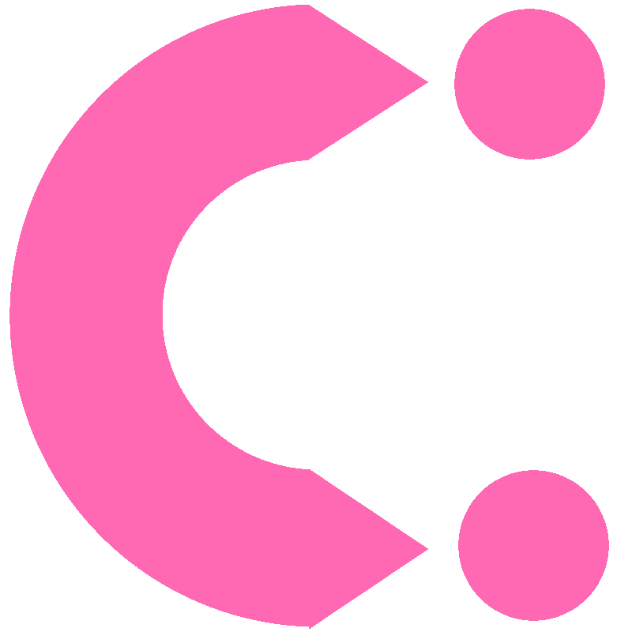

Projects
- 

Connectio is an event based social media web application created for UW-Madison's Hatathon using HTML/CSS/JS/Django.
Created a connect4 minimax algorithm to effectively beat any human player. Used python for the engine.
Very basic ascii visualization of various sorting algorithms using Java. Created after learning basic sorting algorithms and with bare java knowledge.